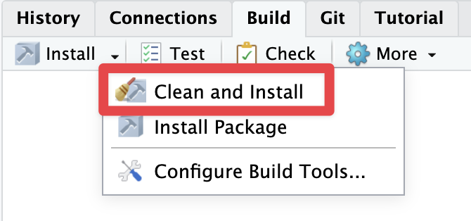

7 Create the package!
It’s happening! We’re nearly there!
We’ve lined things up, now it’s time to start tearing down some walls, and getting things ready to be an R package.
7.1 create_package(here))
Let’s run
create_package(here::here(), open = FALSE)This says:
Create a package in this directory, and don’t open a new RStudio session, please
You get a note that it does the following
✔ Setting active project to
"/Users/nick/github/njtierney/learned".
✔ Writing DESCRIPTION.
✔ Writing NAMESPACE.
! Overwrite pre-existing file learned.Rproj?Personally, I recommend No, there’s not really a point to this in this instance.
ℹ Leaving learned.Rproj unchanged.
✔ Adding "^learned\\.Rproj$" to .Rbuildignore.
✔ Adding "^\\.Rproj\\.user$" to .Rbuildignore.
✔ Setting active project to "<no active project>".There’s a bit to unpack here, you can see these new things have been created!
You can see where I’ve done this here: https://github.com/njtierney/learned/pull/2/commits/d143b0f877c1e875cef98474299e628f1f95e488
There are three files added, which I’ll briefly discuss, and then we can move on to more substantial matters of cleaning this directory up a little bit.
7.1.1 DESCRIPTION file
My DESCRIPTION file looks like this, initially
Package: learned
Title: What the Package Does (One Line, Title Case)
Version: 0.0.0.9000
Authors@R:
person("Nicholas", "Tierney", , "nicholas.tierney@gmail.com", role = c("aut", "cre"),
comment = c(ORCID = "https://orcid.org/0000-0003-1460-8722"))
Description: What the package does (one paragraph).
License: MIT + file LICENSE
Encoding: UTF-8
Language: en-GB
Roxygen: list(markdown = TRUE)
RoxygenNote: 7.3.2Essentially, this is a bunch of metadata about the package. It is a very critical file to an R package, and we’ll come back to it later. For the moment, I think there are two things worth noting
- It’s a bunch of metadata that is really important and specifically formatted
- The DESCRIPTION details here have my name and a few other things set (like
Language: en-GB), because of where we set this up in installation.
7.1.2 .Rbuildignore
This lists files that we don’t want to package up when we eventually build our R package.
This contains:
^learned\.Rproj$
^\.Rproj\.user$Which are specific RStudio files. As you get further along in the package building process, more files will be added to .Rbuildignore.
7.1.3 NAMESPACE
Another super critical file. We don’t touch it by hand. It gets updated automatically via devtools and usethis. It looks like this currently:
# Generated by roxygen2: do not edit by hand7.2 Some housekeeping
We need to really tidy up this repository to be an R package. Theres stuff everywhere.
7.2.1 move the data to data-raw
Let’s clean up all the existing data and move it into a special data-raw folder. The data-raw folder exists in R packages as a place to hold original copies of data that will eventually be cleaned up and shared in the data folder. For the time being, we can store our data sets in here, and we’ll come back to it later.
- Run
use_data_raw() - Move
raw_education_2014...2019.csvinto the newly createddata-rawfolder
7.2.1.1 Running use_data_raw()
When we run use_data_raw(), we get a message like the following:
✔ Setting active project to
"/Users/nick/github/njtierney/learned".
✔ Creating data-raw/.
✔ Adding "^data-raw$" to .Rbuildignore.
✔ Writing data-raw/DATASET.R.
☐ Modify data-raw/DATASET.R.
☐ Finish writing the data preparation script in
data-raw/DATASET.R.
☐ Use `usethis::use_data()` to add prepared data
to package.This is the usethis package’s way of telling us a couple of nifty things:
- DATASET.R is a file it has created, this is where you document changes to the data before it gets saved into the
datafolder - the
datafolder gets created withusethis::use_data()- we will come back to this.
A takeaway point from this is that the usethis package is quite chatty, and quite helpful!
You can see my initial commit of use_data_raw() here: https://github.com/njtierney/learned/pull/2/commits/c47b00349c922411e207598a567f85226bc6b1b4
7.2.1.2 Move CSVs into data-raw/
There’s a few ways to do this, personally, I just use RStudio’s file interface and move the files around. Here’s what that looks like: https://github.com/njtierney/learned/pull/2/commits/05720d1bcedc177905f71ebbb4a994b83f6da9e0
(note that this is effectively a renaming, so there’s not much going on in this commit)
7.2.2 Delete old quarto files, move one into vignettes
We don’t need the alpha-bravo-charlie of it all anymore, we can just stick with one. We’re going to move it to a special folder called a “vignette”. We’re going to shelve it there for a little bit.
- Delete “analysis2014.qmd” and associated HTML/folders
- Delete “alpha-analysis2014.qmd” and associated HTML/folders
- Delete “bravo-analysis2014.qmd” and associated HTML/folders
- (potentially move “solution-charlie-analysis2014.qmd”) into root level and delete “charlie-analysis2014.qmd”)
- Delete “solutions” folder
- run
use_vignette("analysis-2014")
7.2.2.1 deleting old files
Here’s the commit of deleting and moving files, and deleting solutions folder
- https://github.com/njtierney/learned/pull/2/commits/fd74956d7fe7326b1e2c81f546b2a0086b65275e
- https://github.com/njtierney/learned/pull/2/commits/c1aac99ffdc7b1261116180bdd504b8236d4e660
7.2.2.2 Creating quarto vignettes
Once we run
use_vignette("analysis-2014")We get another nice chatty message from usethis:
✔ Adding knitr to Suggests field in DESCRIPTION.
✔ Adding "inst/doc" to .gitignore.
✔ Adding rmarkdown to Suggests field in
DESCRIPTION.
✔ Adding "knitr" to VignetteBuilder.
✔ Creating vignettes/.
✔ Adding "*.html" and "*.R" to
vignettes/.gitignore.
✔ Writing vignettes/analysis-2014.Rmd.
☐ Modify vignettes/analysis-2014.Rmd.You can see the commit for this, here: https://github.com/njtierney/learned/pull/2/commits/4da0a62bb704591ae62d6104e38b6c6d24b6a088
Note that although we started with a Quarto vignette, it opened an Rmarkdown vignette. It is actually possible to use a quarto vignette - as described in the Quarto R package.
And, just because I want this to be more on the side of bleeding-edge erring to timeless, we’re going to do that. There’s a few steps, so hold on.
7.2.2.2.1 update VignetteBuilder
Open the DESCRIPTION file, and replace knitr with quarto in VignetteBuilder.
https://github.com/njtierney/learned/pull/2/commits/e1b0f8b7fbc9a980e2f1bba692bdf1c79dd454ad
Then, copy our “solution/charlie-analysis.qmd” file into vignette folder
https://github.com/njtierney/learned/pull/2/commits/dcd99c067e1d8606a4771ef5afa8c4cef21f1511
Then, add some of the appropriate metadata into the quarto YAML:
https://github.com/njtierney/learned/pull/2/commits/fabf10bada36913c5a3045f0f754cc166820510e
Finally, delete the other Rmd file, and rename ours “analysis-2014.qmd”
https://github.com/njtierney/learned/pull/2/commits/ec15dcf145ac58492a781d4380ba738f1f40dfea
It’s worthwhile noting that this vignette in its current state will not build properly, but we will get to it later.
7.3 Build/install the package
Now, we have a package! This will actually build, and install! Although we still need to do a few things to make it useable, it’s worthwhile celebrating the small steps!
Build the package by navigating to the “build” pane in the top right:

Click this, and see some text like the following appear!
==> R CMD INSTALL --preclean --no-multiarch --with-keep.source learned
* installing to library ‘/Users/nick/Library/R/arm64/4.4/library/_build’
* installing *source* package ‘learned’ ...
** using staged installation
** R
** byte-compile and prepare package for lazy loading
No man pages found in package ‘learned’
** help
*** installing help indices
** building package indices
** installing vignettes
** testing if installed package can be loaded from temporary location
** testing if installed package can be loaded from final location
** testing if installed package keeps a record of temporary installation path
* DONE (learned)Let’s celebrate this win, and also wrap up this long section on a slight cliffhanger: let’s try using our package.
7.4 The workflow of package development.
One of the major workflows during R package development is this:
- Edit R functions
load_all()(or keyboard shortcut Ctrl/Cmd+Shift+L)- Edit R functions.
There is a great cheatsheet for package development that I had stapled to my cubicle wall during my PhD.
Let’s try out our R package. To do this, I’m going to recommend you create a special R file, sometimes called a “scratch file”. It lives inside a folder called inst, which is typically not touched by R package building. This is a useful trick if you want to have a way to play around with some R code, keeping it inside your R package.
Create a scratch file:
- Create a directory
inst - Inside that directory, create an R file called
scratch.R(note that this can actually be called anything, butscratch.Ris what I use) - Write
library(learned)insidescratch.R - Read in the raw education 2014 data from data-raw, and use one of the functions from the R package, like
clean_education_data(). What happens when you use this?
See the commit for this at:
https://github.com/njtierney/learned/pull/2/commits/5779d2b1ff7c4f5f87b4babdfe47ca608b6ebf3c
If you’re like me, I got this error:
> clean_education_data(raw_education_2014)
Error in mutate(data, age_group = clean_age_groups(age_group), prop_studying = na_if(prop_studying, :
could not find function "mutate"Let’s pick this up in the next section, “How to use extra packages”
This whole approach we have taken in this course, is not what I would describe as “the standard way” to make an R package. This represents a bit of a funny situation, where we have taken an existing workflow, and then morphed things into an R package. The benefits to this are that it is useful for teaching. And sometimes, this is how things happen.